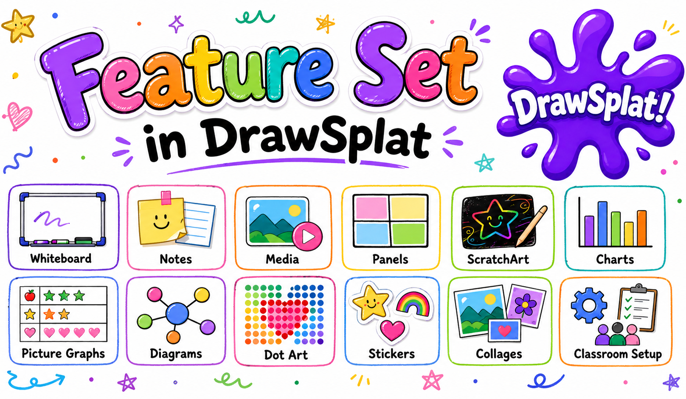
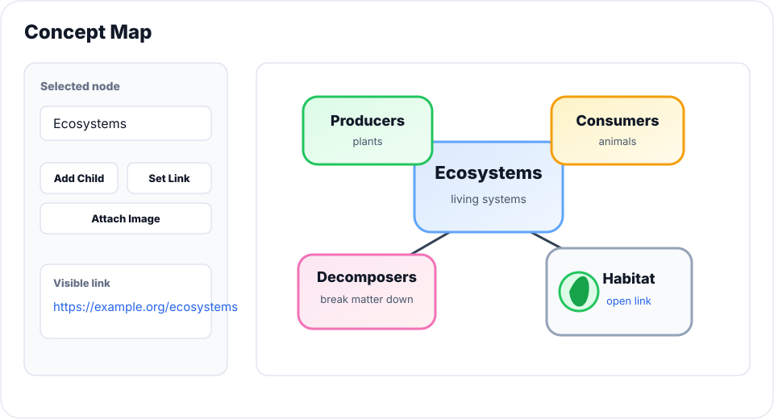
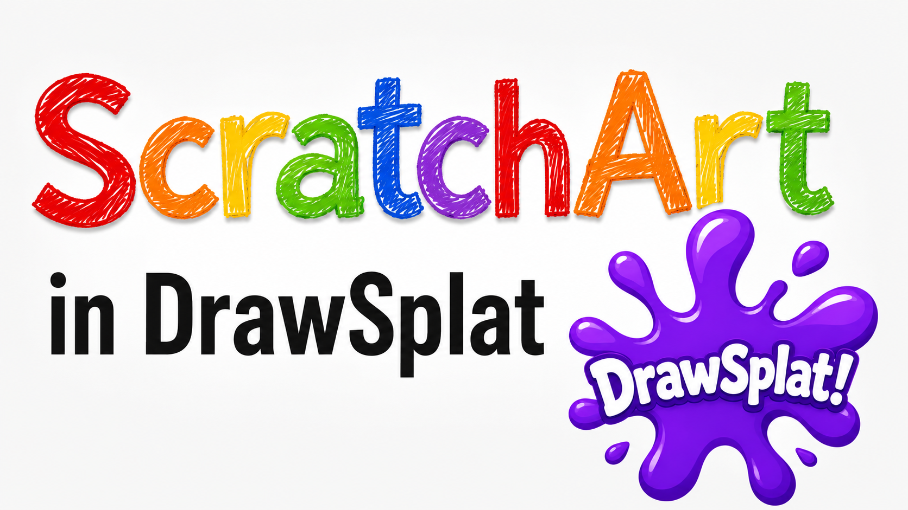

Content added to the board
- Load Image
- Coloring Book
- Mosaic Images and Collage
- Graph Creator and Picture Graph
- Mermaid Diagram, Word Cloud, and Concept Map
- Emoji Mixer
- ScratchArt
- Dot Pictures
- Stickers and Custom Sticker
Feature Set
Use the core whiteboard for drawing, notes, media, and panels, then open focused builders for ScratchArt, charts, picture graphs, diagrams, dot art, stickers, collages, and classroom setup workflows.

Open Directly
These classroom tools run as their own pages, so you can use them without first opening the DrawSplatTM whiteboard.
Create printable bingo cards from vocabulary, questions, names, or numbers.
Live Bingo CallerRun animated bingo calls and same-device player cards.
Markdown StudioWrite, preview, and export classroom Markdown pages.
Coin FlipperFlip custom coins for probability, games, and quick choices.
Dice RollerRoll classroom dice for games, math, and random prompts.
Dicebreaker CreatorCreate dice-based discussion prompts and icebreakers.
Draw & SketchQuick freehand sketch pad for warm-ups and visual brainstorming.
Fortune WheelTeacher-curated wheel with a student-facing share link.
Meme PuzzleBuild image-based puzzle activities for students.
Rubric BuilderCreate practical rubrics for projects and assignments.
Story WheelSpin story prompts for writing, speaking, and warmups.
Wheel SpinnerGeneric spinner — drop in any list and let the wheel pick the winner.
Word Search MakerGenerate word searches for vocabulary practice.
Play Together
Standalone classroom games — turn-based, multiplayer, or single-player puzzles that open in their own page. More games are on the way; check the Games dropdown in the top nav for the latest list.
Pixel-art two-player castle siege — choose munitions, account for wind, and topple the opposing keep.
Dots and BoxesTwo-player classic — connect dots to claim boxes on a colourful grid. Pick CPU or pass-and-play.
Flood FillColour-merging strategy — flood from the top-left and unify the whole board within a move budget.
Flow FreeConnect every matched terminal pair with non-crossing paths. Cover every cell to win.
Fun QuizPick a quiz pack (Winnie the Pooh, Smurfs, Snow White, Looney Tunes) and play a quick character-trivia round.
Lights OutMatrix-inversion puzzle. Toggle cells (and their orthogonal neighbours) to clear the grid under par.
Tangram PackingDrag and rotate polyomino blocks to fill a dark silhouette without overlap.
UntangleDrag graph nodes around until no edges cross. Crimson lines fade to emerald as you clear them.

Create bar, line, area, and pie charts from quick classroom rows. Use it for surveys, counts, comparisons, and discussion prompts.

Build picture-first graphs where students can work from icons, uploaded images, and locally bundled Smithsonian Open Access animal photos.

Generate flowcharts, sequences, mind maps, timelines, Gantt charts, class diagrams, and state diagrams from Mermaid syntax.

Create concept maps directly on the canvas with editable nodes, live connectors, node images, and Ctrl/Cmd-click web links.

Insert dot-based hearts, flowers, rockets, butterflies, apples, ten frames, fish, suns, boats, and more for math and pattern work.

Use quick visual stamps for feedback, signals, prompts, sorting, and student-friendly board markup.

Select images on the board and combine them into layouts with optional titles, banners, background color, and accent color.

Add a ScratchArt cover over a colorful background, then use circle-size Eraser controls to reveal the hidden layer. Each reveal stroke can be undone incrementally.

Use original DrawSplatTM classroom backgrounds as locked panel structures for organizers, literacy, math, science, stations, and reflection.

Use the Support and Guides pages for Google Drive + Sheets setup, MySQL backend setup, ScratchArt activities, and project reference materials.
Use pen, shapes, arrows, text, sticky notes, selection tools, image crop, and object styling for live visual thinking.
Organize lessons, stations, brainstorming rounds, or project phases across multiple board panels.
Reveal class, student, assignment, answer-key, moderation, and turn-in tools only when they are needed.
Add images, audio notes, emojis, GIFs, mosaics, collages, word clouds, Mermaid diagrams, ScratchArt covers, and picture graphs.
Use Big Link, Coin Flipper, Dice Roller, Dicebreaker Creator, Meme Puzzle, Poll, Progress Race, Random Pick, Rubric Builder, Scoreboard, Story Wheel, Timer, Traffic Light, Wheel Spinner, Word Search Maker, and Work Mode for classroom routines.
Insert now focuses on insertable content, Tools holds creation workflows, File includes restore points, and Options includes Keyboard Shortcuts.
Set panel backgrounds, remove background colors, add a canvas color layer with Paint Bucket, and cover backgrounds quickly for ScratchArt activities.
Autosave locally, use Google Apps Script with Drive and Sheets, or prepare for the starter MySQL API backend where the browser never connects directly to the database.
Open the Support page for videos, classroom resource articles, setup guides, and activity walkthroughs such as Rainbow ScratchArt.
Use reset controls or browser-session expiration to clear temporary work after a set window, such as 24 hours.